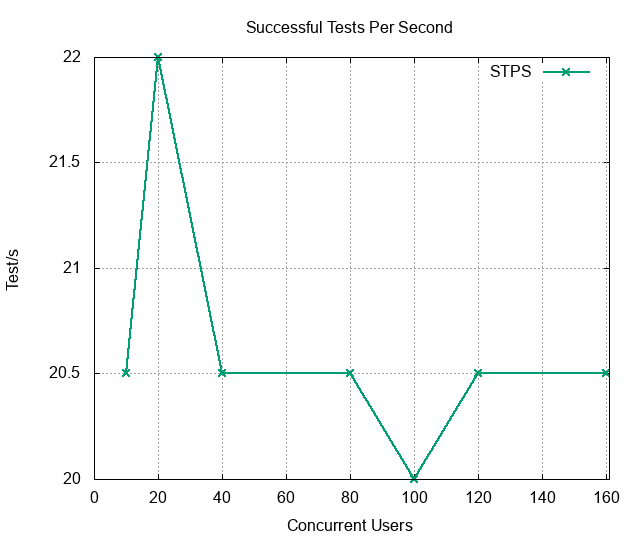
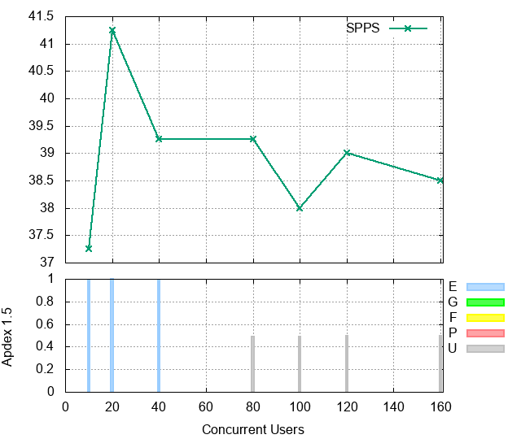
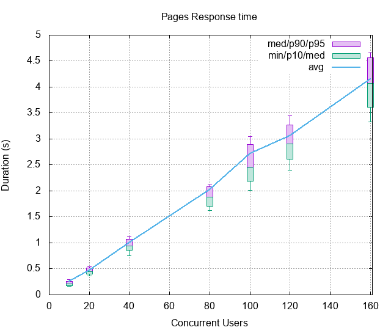
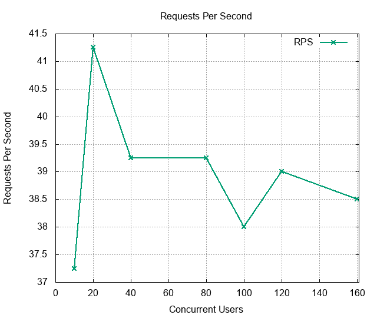
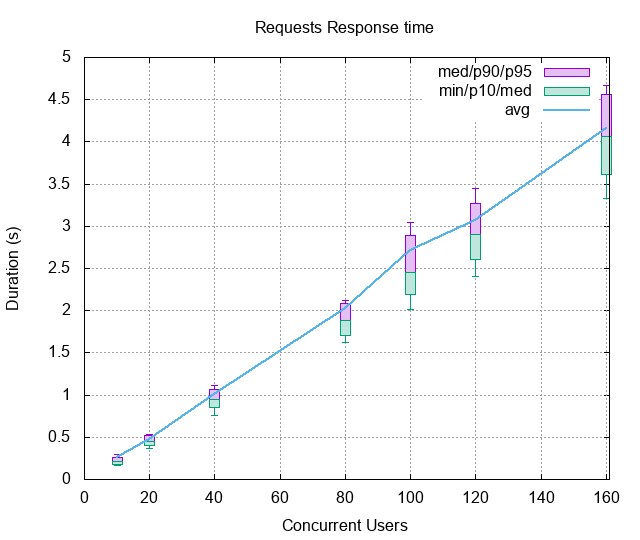
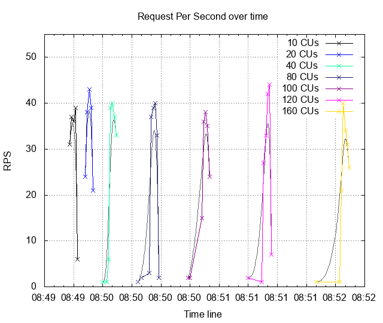
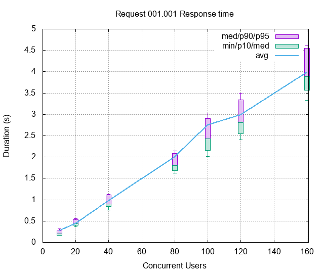
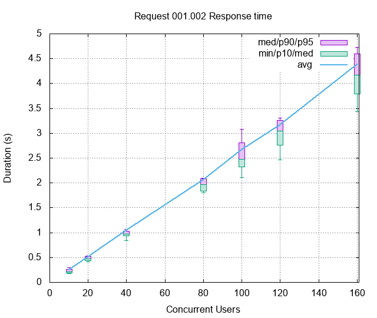

| Date: | 2018-03-30 16:49:41 |
|---|
Abstract
Simply testing a default static page Bench result of Simple.test_simple: Access the main URL 20 times
Table of contents
The test Simple.test_simple contains:
The bench contains:
The number of Successful Tests Per Second (STPS) over Concurrent Users (CUs).

CUs STPS TOTAL SUCCESS ERROR 10 20.500 82 82 0.00% 20 22.000 88 88 0.00% 40 20.500 82 82 0.00% 80 20.500 82 82 0.00% 100 20.000 80 80 0.00% 120 20.500 82 82 0.00% 160 20.500 82 82 0.00%
The number of Successful Pages Per Second (SPPS) over Concurrent Users (CUs). Note: an XML-RPC call counts as a page.
 
CUs Apdex* Rating SPPS maxSPPS TOTAL SUCCESS ERROR MIN AVG MAX P10 MED P90 P95 10 0.987 Excellent 37.250 39.000 149 149 0.00% 0.162 0.260 2.034 0.178 0.209 0.262 0.293 20 0.997 Excellent 41.250 43.000 165 165 0.00% 0.364 0.475 3.409 0.406 0.452 0.521 0.539 40 0.994 Excellent 39.250 40.000 157 157 0.00% 0.756 1.002 5.751 0.857 0.943 1.069 1.112 80 0.490 UNACCEPTABLE 39.250 40.000 157 157 0.00% 1.619 2.025 10.186 1.701 1.885 2.084 2.122 100 0.487 UNACCEPTABLE 38.000 38.000 152 152 0.00% 2.014 2.713 11.399 2.192 2.451 2.892 3.048 120 0.494 UNACCEPTABLE 39.000 44.000 156 156 0.00% 2.405 3.064 14.279 2.607 2.904 3.275 3.452 160 0.497 UNACCEPTABLE 38.500 40.000 154 154 0.00% 3.330 4.157 17.992 3.615 4.069 4.560 4.665 * Apdex 1.5
The number of Requests Per Second (RPS) (successful or not) over Concurrent Users (CUs).
  
CUs Apdex* Rating* RPS maxRPS TOTAL SUCCESS ERROR MIN AVG MAX P10 MED P90 P95 10 0.987 Excellent 37.250 39.000 149 149 0.00% 0.162 0.260 2.034 0.178 0.209 0.262 0.293 20 0.997 Excellent 41.250 43.000 165 165 0.00% 0.364 0.475 3.409 0.406 0.452 0.521 0.539 40 0.994 Excellent 39.250 40.000 157 157 0.00% 0.756 1.002 5.751 0.857 0.943 1.069 1.112 80 0.490 UNACCEPTABLE 39.250 40.000 157 157 0.00% 1.619 2.025 10.186 1.701 1.885 2.084 2.122 100 0.487 UNACCEPTABLE 38.000 38.000 152 152 0.00% 2.014 2.713 11.399 2.192 2.451 2.892 3.048 120 0.494 UNACCEPTABLE 39.000 44.000 156 156 0.00% 2.405 3.064 14.279 2.607 2.904 3.275 3.452 160 0.497 UNACCEPTABLE 38.500 40.000 154 154 0.00% 3.330 4.157 17.992 3.615 4.069 4.560 4.665 * Apdex 1.5
The 5 slowest average response time during the best cycle with 20 CUs:
Req: 001, get, url /simBatch/public/noauth/userLogin?email=15062236806&password=a123456&verificationCode=

CUs Apdex* Rating TOTAL SUCCESS ERROR MIN AVG MAX P10 MED P90 P95 10 0.981 Excellent 81 81 0.00% 0.162 0.269 2.034 0.171 0.196 0.270 0.320 20 1.000 Excellent 90 90 0.00% 0.364 0.443 0.582 0.398 0.434 0.528 0.556 40 0.994 Excellent 86 86 0.00% 0.756 0.973 5.751 0.842 0.896 1.108 1.131 80 0.489 UNACCEPTABLE 89 89 0.00% 1.619 1.998 10.186 1.679 1.796 2.089 2.142 100 0.483 UNACCEPTABLE 87 87 0.00% 2.014 2.753 11.399 2.151 2.425 2.901 3.029 120 0.494 UNACCEPTABLE 89 89 0.00% 2.405 2.987 14.279 2.549 2.805 3.341 3.490 160 0.500 POOR 87 87 0.00% 3.330 3.980 5.778 3.567 3.889 4.549 4.625 * Apdex 1.5
Req: 002, get, url /simBatch/public/noauth/login

CUs Apdex* Rating TOTAL SUCCESS ERROR MIN AVG MAX P10 MED P90 P95 10 0.993 Excellent 68 68 0.00% 0.176 0.248 1.956 0.188 0.219 0.259 0.291 20 0.993 Excellent 75 75 0.00% 0.415 0.514 3.409 0.443 0.472 0.517 0.536 40 0.993 Excellent 71 71 0.00% 0.836 1.038 5.200 0.931 0.977 1.034 1.069 80 0.493 UNACCEPTABLE 68 68 0.00% 1.798 2.061 8.849 1.835 1.968 2.084 2.099 100 0.492 UNACCEPTABLE 65 65 0.00% 2.114 2.661 10.884 2.322 2.482 2.812 3.079 120 0.493 UNACCEPTABLE 67 67 0.00% 2.464 3.167 13.319 2.762 3.041 3.263 3.309 160 0.493 UNACCEPTABLE 67 67 0.00% 3.437 4.387 17.992 3.787 4.170 4.593 4.727 * Apdex 1.5
CUs: Concurrent users or number of concurrent threads executing tests.
Request: a single GET/POST/redirect/XML-RPC request.
Page: a request with redirects and resource links (image, css, js) for an HTML page.
STPS: Successful tests per second.
SPPS: Successful pages per second.
RPS: Requests per second, successful or not.
maxSPPS: Maximum SPPS during the cycle.
maxRPS: Maximum RPS during the cycle.
MIN: Minimum response time for a page or request.
AVG: Average response time for a page or request.
MAX: Maximmum response time for a page or request.
P10: 10th percentile, response time where 10 percent of pages or requests are delivered.
MED: Median or 50th percentile, response time where half of pages or requests are delivered.
P90: 90th percentile, response time where 90 percent of pages or requests are delivered.
P95: 95th percentile, response time where 95 percent of pages or requests are delivered.
Apdex T: Application Performance Index, this is a numerical measure of user satisfaction, it is based on three zones of application responsiveness:
Satisfied: The user is fully productive. This represents the time value (T seconds) below which users are not impeded by application response time.
Tolerating: The user notices performance lagging within responses greater than T, but continues the process.
Frustrated: Performance with a response time greater than 4*T seconds is unacceptable, and users may abandon the process.
By default T is set to 1.5s. This means that response time between 0 and 1.5s the user is fully productive, between 1.5 and 6s the responsivness is tolerable and above 6s the user is frustrated.
The Apdex score converts many measurements into one number on a uniform scale of 0-to-1 (0 = no users satisfied, 1 = all users satisfied).
Visit http://www.apdex.org/ for more information.
Rating: To ease interpretation, the Apdex score is also represented as a rating:
Report generated with FunkLoad 1.17.1, more information available on the FunkLoad site.